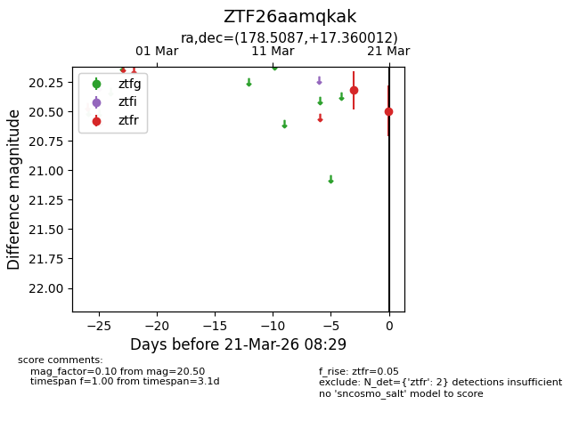
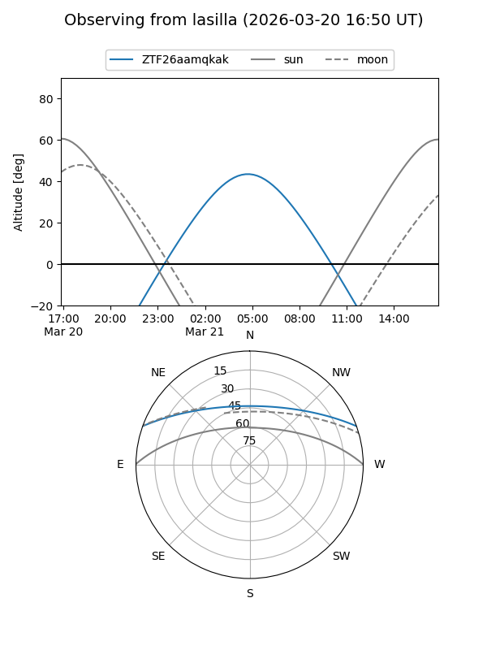
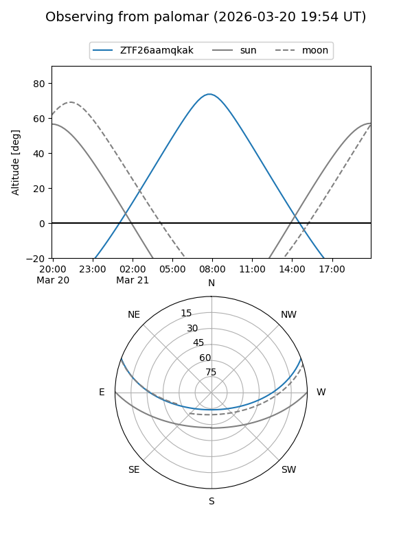

ZTF26aamqkak
Target ZTF26aamqkak at 2026-03-21 08:31
Aliases and brokers:
FINK: link
Lasair: link
ALeRCE: link
alt names
ZTF26aamqkak (ztf,fink_ztf)
Coordinates:
equatorial (ra, dec) = 178.5087,+17.36001
equatorial (HMS+DMS) = 11:54:02.08,+17:21:36.04
galactic (l, b) = (246.3480,+73.53564)
Flags:
Photometry:
last ztfr=20.50
2 ztfr detections
Lightcurve

Visibility


Additional plots